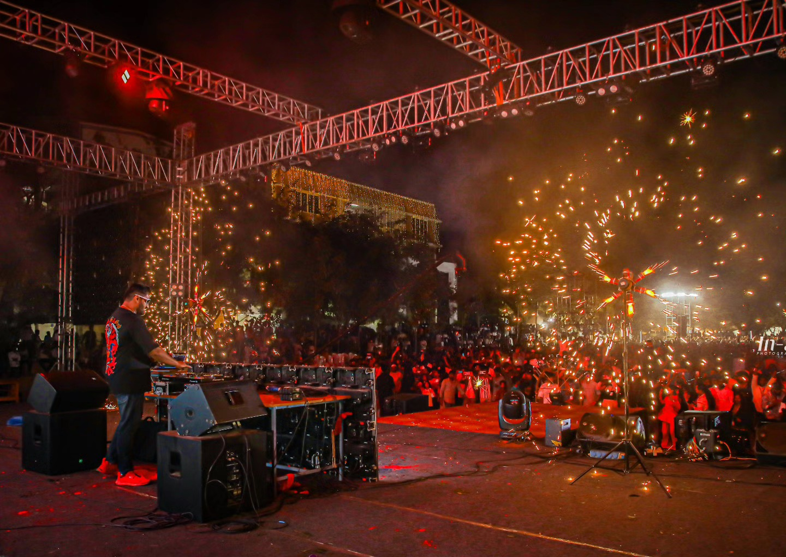
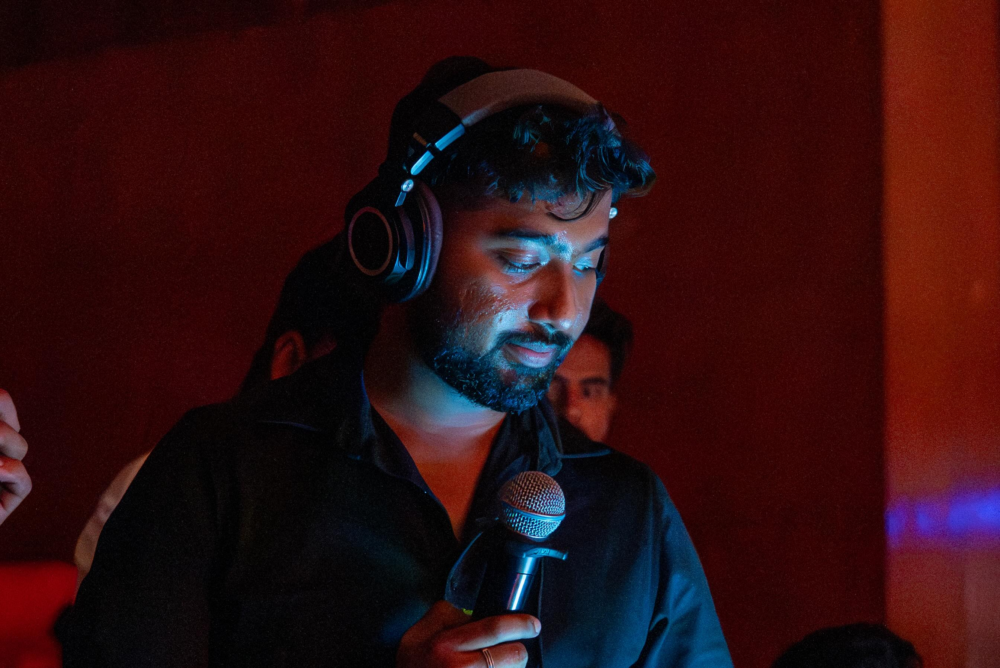
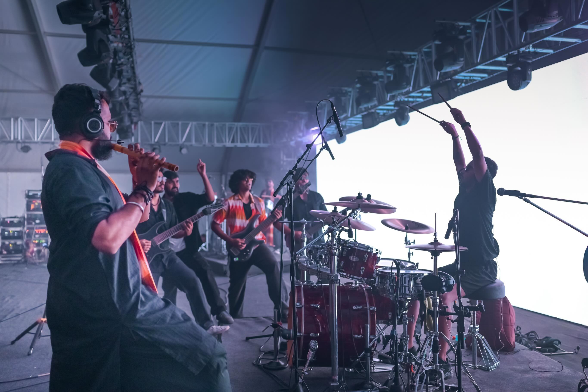
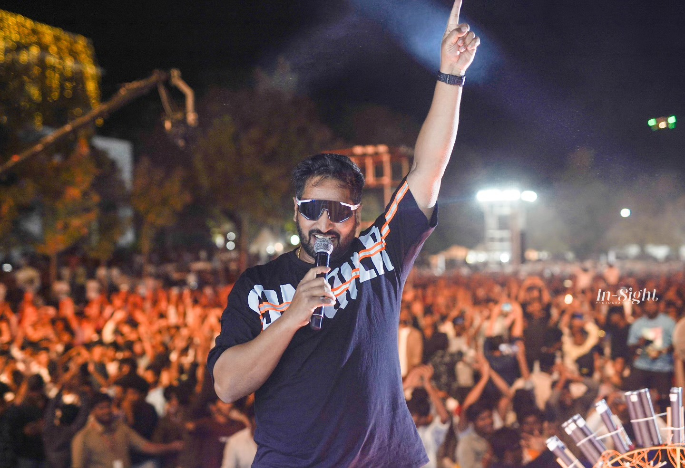
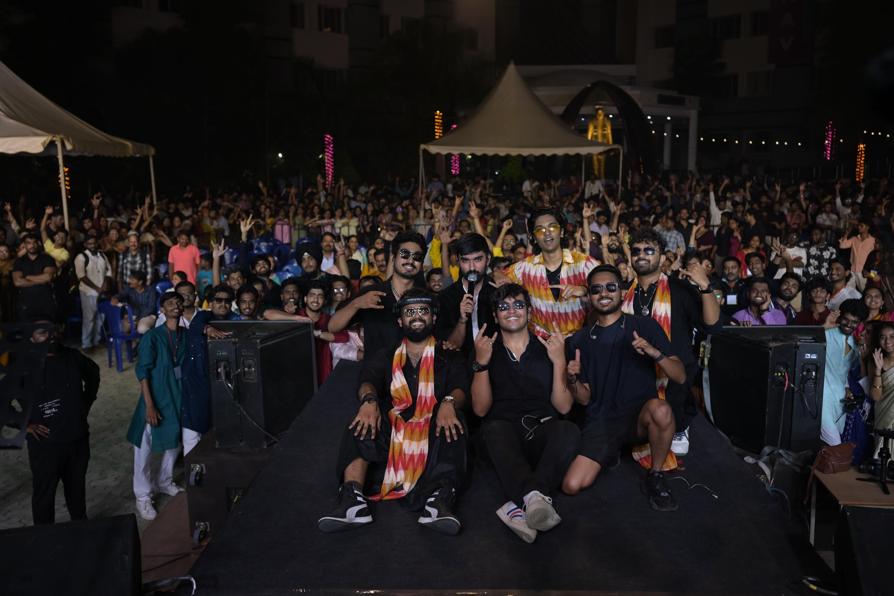
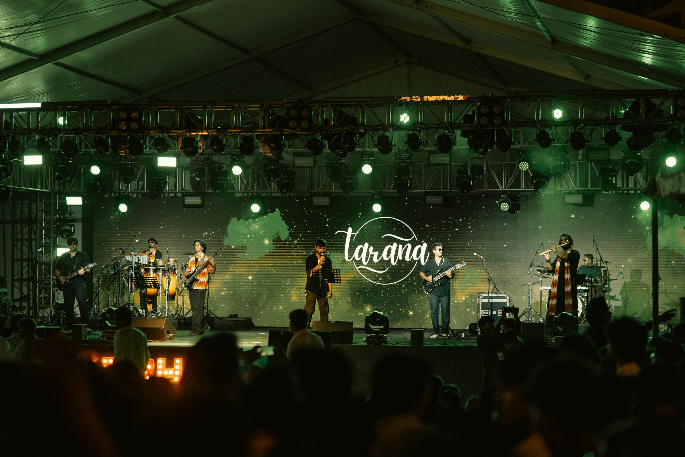

Tell us your world.
The occasion, the people, the details that matter. We start by understanding what you want to remember.
THE CONVERSATION
Considered photography and films for corporate events,
live experiences, and the people at their heart.
A wider view of your event. A closer look at what matters. Explore how we bring the occasion, the people, and the details into the picture.
Explore selected moments from our live-event portfolio.
Attention to atmosphere, people, and the details.
Real energy. Real movement. A way back into the room.

Less pose.That look before the lights go up. The hands in the air. The quiet smile in a room full of noise.
We’re drawn to the moments that make an event yours. Through photography and videography, we turn fleeting seconds into something you can come back to.
Let’s tell your story ↗Look a little closer.
There’s a whole world around the spotlight.



Every occasion has its own rhythm.
Here’s how we find yours.
The occasion, the people, the details that matter. We start by understanding what you want to remember.
THE CONVERSATIONWe discuss the coverage, the flow of the day, and the moments to look out for. A little planning leaves room for the unexpected.
THE PERSPECTIVEFeel the moment while we focus on the frames. Afterwards, revisit your story through the photographs and films we create.
THE FEELING, KEPT
One day, this will be
the good old days.
In-Sight covers concerts, corporate events, and school and college occasions through photography and videography. For weddings, explore our dedicated Shoot at Sight wedding stories.
Yes. Tell us about your occasion and the kind of coverage you have in mind. We’ll discuss photography, videography, and a combination that suits your event.
Send us your event date, location, and a short brief on Instagram at @insightpinsta. We’ll discuss availability, coverage, and a quote for your plans.
Absolutely. Share the mood, moments, or visual references you love when you enquire. It helps us understand the feeling you want your photographs and films to hold.
Delivery depends on the coverage and editing involved. We’ll discuss the deliverables and expected timeline with you before your booking is confirmed.
Share your event date, location, and coverage requirements.
Let’s discuss the right approach for your project.